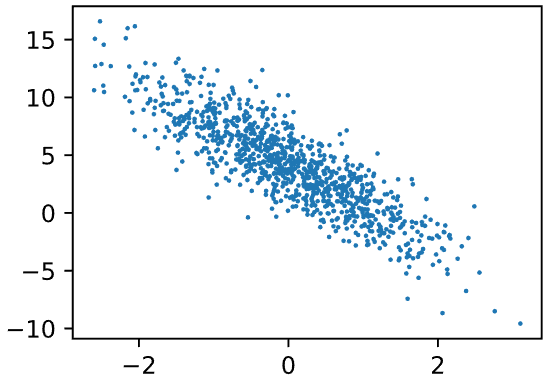
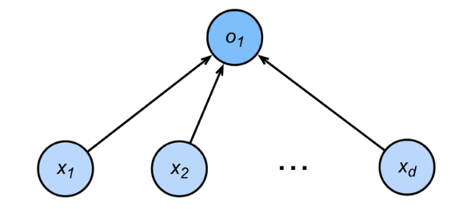
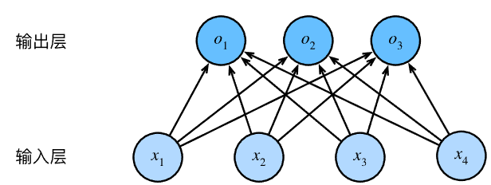
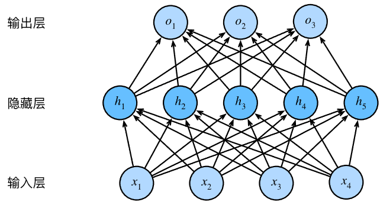
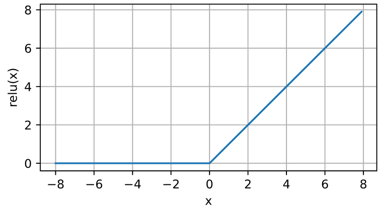
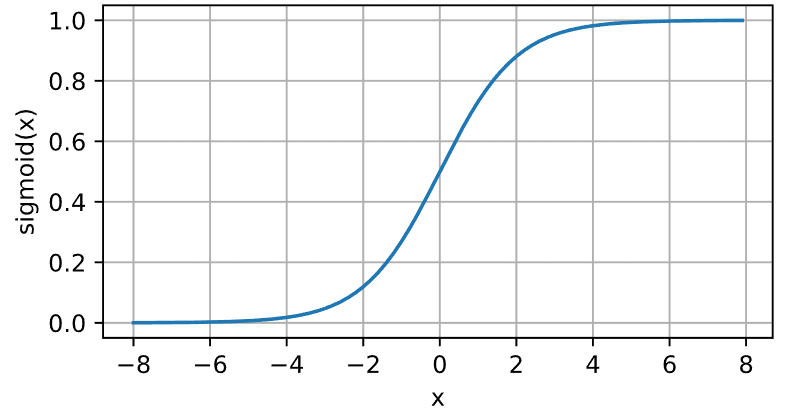
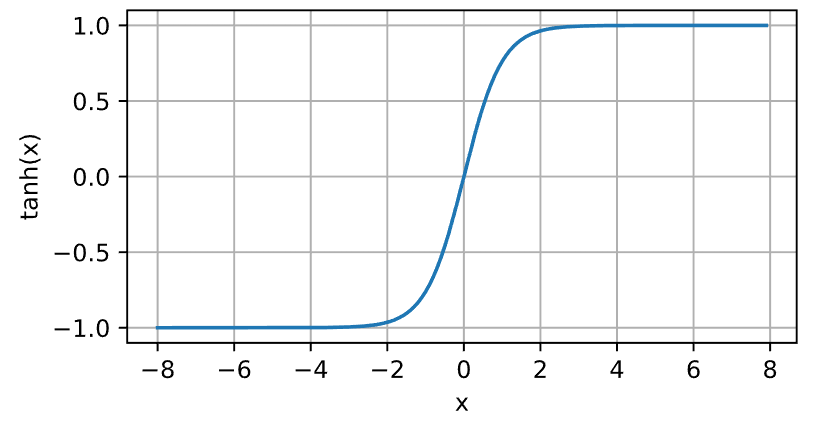

复习深度学习必要的理论，可参考该复习线路。该文内容学自李沐动手学深度学习，更基础详尽的理论可以学习吴恩达深度学习。
# 线性神经网络
# 线性回归
学习视频链接：https://www.bilibili.com/video/BV1PX4y1g7KC/?spm_id_from=333.1387.collection.video_card.click&vd_source=3d14560c28f90efdd1f3e6caf7bf4277
- 线性回归是对 n 维输入的加权，外加偏差，通常用于预测，方程形式：
- 通常使用
MSE损失去衡量预测的精确性，即预测值 和真实值 y 的均方差：
- 线性回归一般有显式解，显式解是损失导数为 0 的点。
- 线性回归可以看做是单层神经网络， 实际上是唯一的一层神经元的权重。
pytorch 实现线性回归很简单。线性回归可以被看成是一层神经网络，因此可以用全连接层实现：
net = nn.Linear(2, 1) |
Linear 第一个参数是输入数据形状的最后一个维度，比如输入数据 features.shape 是 [4,2]，那么 Linear 第一个参数就是 2。通常输入数据的最后一个维度是数据的特征，2 代表输入数据有两个维度的特征，如买房数据有房价和占地面积两个维度的特征。第二个参数就是输出数据形状的最后一个维度。
# 基础优化算法概览
学习视频链接：https://www.bilibili.com/video/BV1PX4y1g7KC?spm_id_from=333.788.videopod.episodes&vd_source=3d14560c28f90efdd1f3e6caf7bf4277&p=2
# 梯度下降
基本思想是，对一组初始化的参数，反复迭代训练，按照下面的公式进行参数更新，使得最小化损失函数：
是学习率。学习率是一个很重要的超参，设置太大会导致模型无法收敛，设置太小会导致收敛过慢。
# 小批量梯度下降
在整个训练集上进行求梯度、求导会很慢。我们可以随机采样 b 个样本，计算损失来近似整个训练集上的损失。这个 b 就是 batch_size （批量大小），不能设置太大，太大导致内存占用过高，设置太小又无法充分发挥硬件潜力。
# 基本深度学习训练流程
以线性回归为例，假设我们要建立一个这样的模型：
事先导入需要用的包：
import numpy as np | |
import torch | |
from torch.utils import data | |
from d2l import torch as d2l |
人工生成数据：
def synthetic_data(w, b, num_examples): | |
"""生成y=Xw+b+噪声""" | |
X = torch.normal(0, 1, (num_examples, len(w))) | |
y = torch.matmul(X, w) + b | |
y += torch.normal(0, 0.01, y.shape) | |
return X, y.reshape((-1, 1)) | |
true_w = torch.tensor([2, -3.4]) | |
true_b = 4.2 | |
features, labels = synthetic_data(true_w, true_b, 1000) # 生成 1k 个样本。 |
数据案例：
print('features:', features[0],'\nlabel:', labels[0]) | |
# 返回 | |
# features: tensor([-0.3679, -1.8471]) | |
# label: tensor([9.7361]) |
features 是样本的特征，本质是一个二维数组，长度为 1000，而 label 是样本的预测真实值。这里每个样本有两个特征，对每个特征单独分析，都会发现其与 label 存在线性关系：

读取数据集的函数，返回一个 dataloader：
def load_array(data_arrays, batch_size, is_train=True): | |
"""构造一个PyTorch数据迭代器""" | |
dataset = data.TensorDataset(*data_arrays) | |
return data.DataLoader(dataset, batch_size, shuffle=is_train) |
数据情况示例：
batch_size = 10 | |
data_iter = load_array((features, labels), batch_size) | |
next(iter(data_iter)) | |
# 结果分别是 features 和 labels： | |
# [tensor([[ 0.1554, -0.2034], | |
# [-0.2140, 1.0352], | |
# [-0.4209, 0.0428], | |
# [ 0.1887, 0.6141], | |
# [ 0.4987, -0.2314], | |
# [ 0.0653, 1.6406], | |
# [-1.1881, 0.2900], | |
# [-0.2824, 0.5910], | |
# [ 0.9963, -0.1816], | |
# [-1.6830, -1.3963]]), | |
# tensor([[ 5.2116], | |
# [ 0.2479], | |
# [ 3.2188], | |
# [ 2.4845], | |
# [ 5.9884], | |
# [-1.2453], | |
# [ 0.8441], | |
# [ 1.6217], | |
# [ 6.8072], | |
# [ 5.5692]])] |
我们的目的就是使用这 1000 个样本，训练出一个线性回归模型，也就是求出 w 和 b，以最大化预测的精度，即给定一个样本特征，能够尽可能估计出其对应 label 的值。
初始化线性回归模型的参数，然后在训练过程中，这些参数会被学习、调整。定义模型和损失函数，并初始化模型参数：
# nn 是神经网络的缩写 | |
from torch import nn | |
net = nn.Sequential(nn.Linear(2, 1)) | |
loss = nn.MSELoss() | |
net[0].weight.data.normal_(0, 0.01) | |
net[0].bias.data.fill_(0) |
正如前面所说的，对整个数据集进行梯度求导会相当费时，所以通常采用小批量梯度下降 ——SGD。
trainer = torch.optim.SGD(net.parameters(), lr=0.03) |
这样就可以开始训练了：
num_epochs = 3 | |
for epoch in range(num_epochs): | |
for X, y in data_iter: | |
l = loss(net(X) ,y) | |
trainer.zero_grad() | |
l.backward() | |
trainer.step() | |
l = loss(net(features), labels) | |
print(f'epoch {epoch + 1}, loss {l:f}') | |
# 训练过程举例： | |
# epoch 1, loss 0.043705 | |
# epoch 2, loss 0.000172 | |
# epoch 3, loss 0.000047 |
# 回归、分类与独热编码
学习视频：https://www.bilibili.com/video/BV1K64y1Q7wu?spm_id_from=333.788.videopod.episodes&vd_source=3d14560c28f90efdd1f3e6caf7bf4277
回归可以用于预测的问题，比如预测房屋被售出价格，或者棒球队可能获得的胜场数，又或者患者住院的天数，回归的输出是一个连续的数值。

分类则更倾向于问 “哪一个”。比如，某个电子邮件是否属于垃圾邮件，某张图像是驴、狗、猫还是鸡。分类问题通常是多个输出，输出 i 是模型预测输入为第 i 类的置信度。

独热编码能够很好地应用到分类问题上，比如有三个类别：{狗，猫，鸡}。在计算机中，可以用 (1,0,0) 代表狗，用 (0,1,0) 代表猫，用 (0,0,1) 代表鸡。也就是说，用向量表示标签，分量和类别一样多，都是 3。类别对应的分量设置为 1，其他所有分量不是这个类别的设置为 0，这就是独热编码。
# Softmax 运算与全连接层
学习视频：https://www.bilibili.com/video/BV1K64y1Q7wu?spm_id_from=333.788.videopod.episodes&vd_source=3d14560c28f90efdd1f3e6caf7bf4277
softmax 运算将数据转换为 [0,1] 区间的数值，可以理解为一种标准化，数值可以认为是概率。比如，一个长度为 3 的向量经过 softmax 操作后，3 个数值都会被转换为 0 到 1 的区间值，并且相加和为 1。
softmax 公式如下：
全连接层无处不在，前面提到全连接层可以很方便地通过 nn.Linear 实现。但是全连接层也不是没有缺点，参数量冗余是问题。对于任何具有 d 个输入和 q 个输出的全连接层（对应在最后一个维度上，输入和输出的特征数分别为 d 和 q），参数量开销为 O (dq)。
后续会提到用 Dropout 方法处理这个问题。
# 经典损失函数
# L1 损失
# L2 损失
# Huber 鲁棒损失
# 交叉熵损失
# 信息论基础
# 多层感知机
# 多层感知机理论
前面提到的线性回归是一种线性神经网络，这样的网络存在一种假设：输入和输出是线性相关的。这种假设下，任何输入的特征增大都会导致模型的输出增大或减小。但很多时候，输入和输出并非是线性相关的。比如一张图像，增加某个位置的像素的强度值能否总是增大其分类为狗的概率？
我们可以在网络中加入一个或多个隐藏层来突破线性模型的限制，使其能处理更普遍的函数关系类型。这种架构称为多层感知机（ multilayer perceptron, MLP ），这是堆叠许多全连接层的神经网络。

每两个层都是全连接的，每个输入都会影响隐藏层中的每个神经元，而隐藏层中的每个神经元又会影响输出层中的每个神经元。
如果输入，n 是小样本数，d 是输入特征。对于隐藏层有权重、偏置，输出层也有权重 和偏置。其中，h 通常是这个隐藏层的隐藏单元数，q 是输出的输出特征，如果要分类为 10 类，q 就是 10。因此多层感知机（单个隐藏层）的数学表达式可以表示为，O 是输出，H 称为隐藏表征（ hidden representation ）：
# 激活函数
没有激活函数的多层感知机相当于线性神经网络。观察上面的表达式，隐藏单元由输入的仿射变换给出，而输出也只是隐藏单元的仿射函数。仿射函数的仿射函数还是仿射函数，可以如下证明上面的多层感知机等价于单层模型：
这是因为，之前说到的线性回归模型已经可以表示任何仿射函数。通过合并，多层感知机退化为单层的线性回归模型。为了发挥多层架构的潜力，可以在仿射变换后应用非线性的激活函数（ activation function ），即：
这样，多层感知机避免了线性计算退化为单层的线性模型的风险。通过隐藏层中的神经元，多层感知机可以捕获输入之间复杂的相互作用，这些神经元依赖每个输入的值。如果给定足够的神经元和正确的权重，我们就可以对任意函数进行建模，尽管实际应用中学习该函数是很困难的。
# ReLU 函数
最受欢迎的激活函数：修正线性单元（ rectified linear unit, ReLU ）。数学表达式为：
ReLU 函数通过将相应的激活值设为 0，仅保留正元素并丢弃所有负元素。当输入值精确为 0 试， ReLU 函数不可导。 ReLU 函数求导很方便，优化表现好，并一定程度上缓解了以往神经网络的梯度消失问题。代码实现和函数曲线图如下：
y = torch.relu(x) |

# sigmoid 函数
对于一个定义在 的输入， sigmoid 激活函数将输入变换到 (0,1) 区间。数学表达式为：
这是一个平滑的、可微的阈值单元的近似函数。sigmoid 常被用做输出层的激活函数，这个时候，它输出二元分类的概率，因此 sigmoid 可以看作是 softmax 的一个特例。但是，隐藏层中的激活函数还是不选择 sigmoid，因为 ReLU 更合适。当输入接近 0 时，sigmoid 函数接近线性变换。代码实现和函数曲线图如下：
y = torch.sigmoid(x) |

# Tanh 函数
Tanh （双曲正切）函数也是将输入压缩转换到区间 (-1,1) 上。函数公式如下：
输入在 0 附近时，它和 sigmoid 函数一样，接近线性变换。代码实现和函数曲线图如下：
y = torch.tanh(x) |
